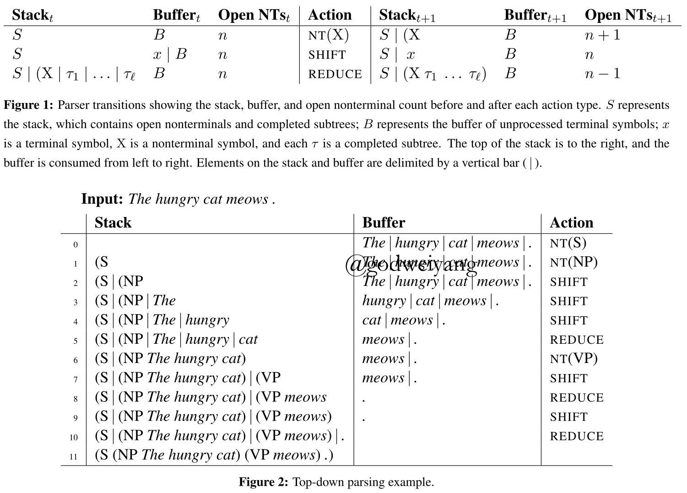
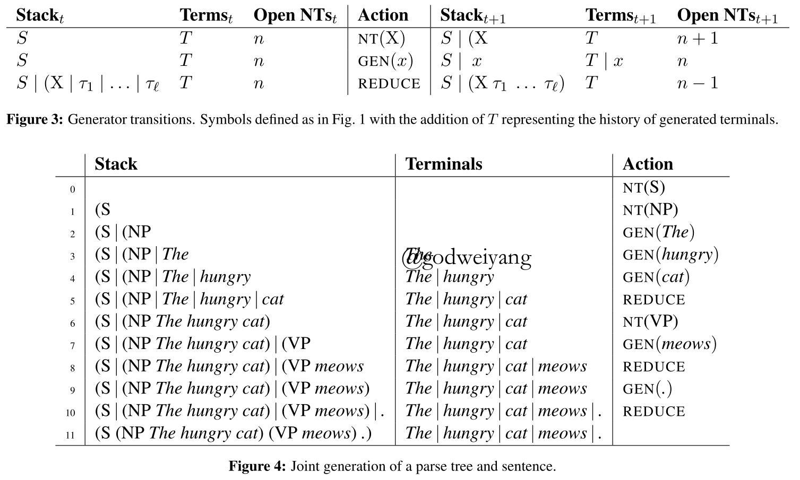
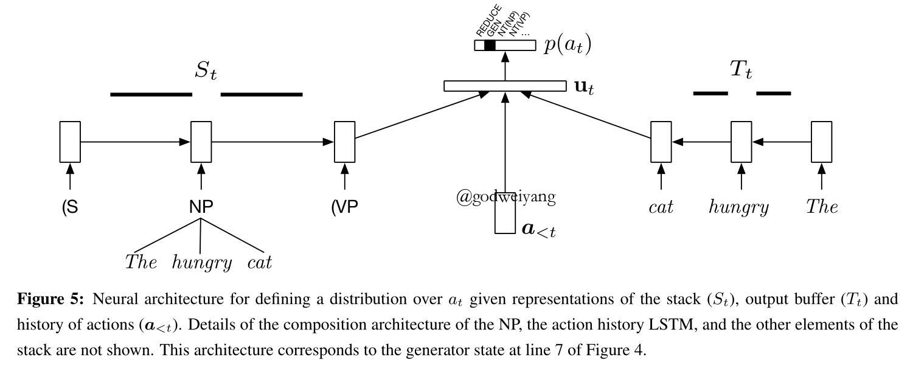
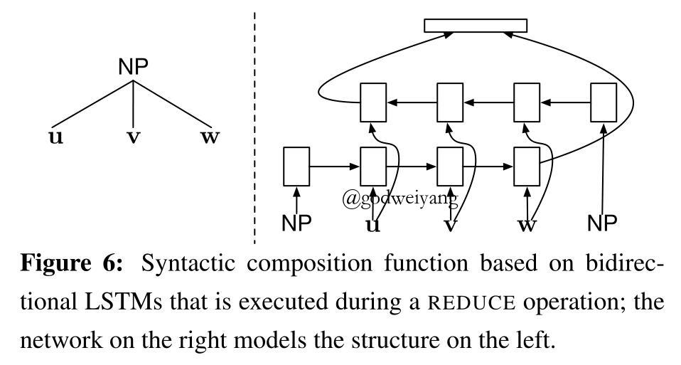
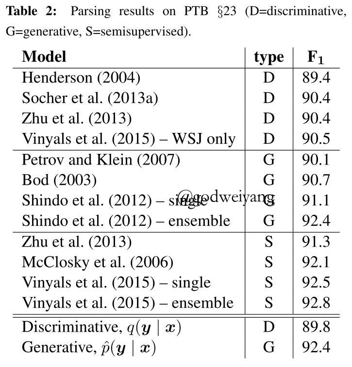
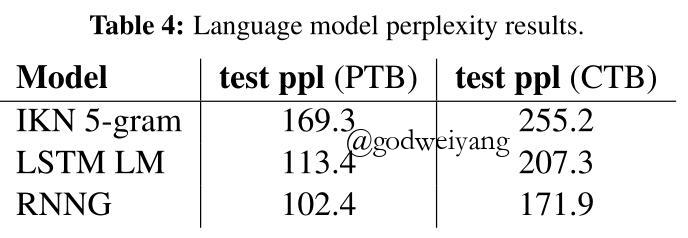

论文地址：Recurrent Neural Network Grammars
代码地址：github
今天要介绍的这篇论文是来自NAACL16的Recurrent Neural Network Grammars，主要贡献点就是提出了一种新的文法RNNG，不同于传统的PCFG之类的文法，RNNG使用RNN来对句子和它的句法树的联合概率进行建模，因此它是一个生成模型。但是稍稍修改就可以改为判别模型，也就是大家熟悉的基于转移的成分句法分析系统，并且转移系统是采用top-down方法的，也就是利用了句法树的前序遍历。
RNNG在语言模型任务上取得了当时的state-of-the-art结果，成分句法分析任务上，生成模型取得了媲美最好结果的F1值，而判别模型就差了点。本文最大的贡献点就是提出了生成式模型RNNG，说明了在数据量不是很大的时候，利用生成式模型可以提高成分句法分析的准确率。
摘要
RNN在语言模型和其他许多NLP任务上面都已经取得了非常不错的效果，但是RNN只能捕捉到句子的序列特征，例如句子的句法结构等递归嵌套的结构信息无法用RNN捕捉到。
因此本文提出了一种利用RNN建模出来的全新文法RNNG，建立在句子的句法结构之上，消除了PCFG的上下文无关假设。并提出了两种变体，一种是生成模型，可以用来句法分析和训练语言模型，另一种是判别模型，可以用来句法分析。
RNNG建立在top-down转移系统之上，top-down转移系统相比于bottom-up转移系统有一个好处，就是不需要二叉化，因为如果bottom-up转移系统不二叉化的话，REDUCE的状态就会有很多种可能，不知道到底归约栈里的几个结点。而top-down转移系统就不存在这个问题，直接归约到第一个父结点为止就行了。本文应该也是第一个提出用RNN来实现top-down转移系统的，之前的方法都是用top-down的文法，或者是bottom-up的，例如Sochar2013的CVG，也是用二叉化后的RNN学习结点的语义表示。
RNN文法
RNNG定义为三元组$(N, \Sigma, \Theta)$，其中$N$是非终结符集合，$\Sigma$是终结符集合，并且$N \cap \Sigma = \emptyset$，$\Theta$就是神经网络的参数集合。RNNG和传统的PCFG的一个明显区别就是它没有显式地指出语法规则是什么，而是蕴含在了神经网络中，在句法转移的时候动态的生成。
Top-down句法分析和生成
这部分主要介绍RNNG的两个变体，一个是top-down的句法分析系统，还有一个是稍稍修改后的生成系统。
判别式系统
这个判别式模型之前也已经介绍过很多次了，和普通的基于转移的句法分析系统一样，输入是一个句子$x$，输出是它的句法分析树$y$。主要组成部分有句法树栈、句子单词buffer、动作集合，每一步的动作有三种：
- NT(X)： 将一个父结点X移进栈里。
- SHIFT： 从buffer中移一个单词到栈里。
- REDUCE： 将栈顶的若干个结点归约为它们的父结点，并且出栈。
图1就是每个动作的状态变化过程，图2是判别式模型进行句法分析的示例：

当然得给动作添加一些限制，首先记当前状态为三元组$(B, S, n)$，分别表示buffer、栈、当前栈里未归约的父结点数量，这个之前的博客没有提及过：
- NT(X)动作只有当buffer不为空并且$n < 100$的时候才能进行。因为buffer空了的话就没有单词了，此时不可能移进新的非终结符了，并且要限制$n < 100$防止一元产生式无限生成下去。
- SHIFT动作只有当buffer不为空并且$n \ge 1$时才能进行。前者不用解释了，后者的话因为是top-down的，所以栈里至少要有一个父结点才能移进新的单词。
- REDUCE只有当栈顶不是没有归约的父结点才能进行。
- REDUCE只有当$n \ge 2$或者buffer为空时才能进行。这里要解释一下为什么$n \ge 2$，因为如果buffer不为空同时$n = 1$，那么这时候如果REDUCE的话，栈里就只剩一个非终结符了，只可能是根节点S，而buffer里还有单词，所以这是不可能的。
记当前状态的可能动作集合为$\mathcal{A}_D(B, S, n)$。
生成式系统
将上面的top-down转移系统稍稍修改即可得到生成式系统。区别有两点：
- 首先没有了输入的buffer，取而代之的是输出的buffer $T$。
- 其次因为没有输入单词了，所以在需要输入单词的时候采用GEN(x)动作来产生一个新的单词$x$，然后移进栈里，取代SHIFT动作。
图3就是每个动作的状态变化过程，图4是生成式模型进行句法分析的示例：

同样也要对其采取一些限制：
- GEN(x)动作只有当$n \ge 1$时才能进行，上面SHIFT限制已经解释过了。
- REDUCE只有当$n \ge 1$或者buffer为空时才能进行。这里再次解释一下，上面判别式模型限制条件是$n \ge 2$，为什么这里就变成了$n \ge 1$？因为生成模型没有输入buffer，所以即使$n = 1$时REDUCE了，以后不要再GEN(x)即可，直接结束分析
记当前状态的可能动作集合为$\mathcal{A}_G(T, S, n)$。
转移序列
因为一棵句法树的前序遍历是唯一的，所以不管用判别式模型还是生成式模型，得到的动作序列也都是唯一的。对于句子$x$和句法树$y$，记生成式模型动作序列为$a(x, y)$，判别式模型动作序列为$b(x, y)$。
生成式模型
本文最重要的就是上面提到的生成式模型，因为GEN(x)动作的存在，所以模型同时对句子$x$和句法树$y$的联合分布进行了建模。记当前状态的向量表示为$u_t$，那么联合分布可以表示为：
\[p(x,y) = \prod\limits_{t = 1}^{\left| {a(x,y)} \right|} {p({a_t}|{a_{ < t}})} = \prod\limits_{t = 1}^{\left| {a(x,y)} \right|} {\frac{ {\exp r_{ {a_t}}^T{u_t} + {b_{ {a_t}}}}}{ {\sum\nolimits_{a’ \in {\mathcal{A}_G}({T_t},{S_t},{n_t})} {\exp r_{a’}^T{u_t} + {b_{a’}}} }}} \]
其中$r_a$表示动作$a$的向量表示，$b$表示偏移向量，都包含在了RNNG参数集合$\Theta$里面，通过训练得到。
而当前状态的向量表示$u_t$由三部分得到，输出buffer的LSTM输出$o_t$、栈的LSTM输出$s_t$、历史动作序列的LSTM输出$h_t$，然后经过一个前馈神经网络得到：
\[u_t = \tanh (W[o_t; s_t; h_t] + c)\]
$W$和$c$同样也包含在了RNNG参数集合$\Theta$里面，下图是三个LSTM的示例图：

句法成分组合
在REDUCE操作时，需要将若干个子结点归约为一个父结点，为了得到父结点的向量表示，再次利用一个LSTM对子结点序列进行编码，同时在首尾加上父结点，结构图如下所示：

单词生成
单词生成采用softmax寻找概率最大的单词，但是单词数量可能十分巨大，所以采用分层softmax的思想，首先预测当前动作是不是GEN，如果是GEN，记单词总数为${\left| { \sum } \right|}$，再将单词平均分成${\sqrt {\left| \sum \right|} }$个类别，用softmax预测属于哪个类别，然后在那个类别里再用softmax预测输出哪个单词。这样时间复杂度就从$O\left( {\left| \sum \right|} \right)$降到了$O\left( {\sqrt {\left| \sum \right|} } \right)$。
参数训练和判别式模型
模型最终训练目的就是使得联合概率最大。
而只需要将输出buffer改为输入buffer，GEN动作改为SHIFT动作，然后重新训练，就可以将模型变为判别式模型了，输出给定输入句子下概率最大的句法树。
通过重要性采样进行推理
本文的生成式模型另一大作用是训练语言模型$p(x)$，根据边际分布公式
\[p(x) = \sum\nolimits_{y \in \mathcal{Y}(x)} {p(x,y)} \]
可以直接得到$p(x)$，但是一句话的句法树可能性是指数级别的，不可能一一枚举，这时候就要用到重要性采样算法。
首先定义一个比较容易得到的条件分布$q(y | x)$，它满足如下性质：
- $p(y | x) > 0$可以推出$q(y | x) > 0$。
- 服从分布的样本很容易得到。
- $q(y | x)$可以直接计算得到。
可以发现，上面的判别式模型得到的条件分布符合上面的性质，所以这里直接用判别式模型来进行采样。
这样$p(x)$就变为了：
\[p(x) = \sum\nolimits_{y \in \mathcal{Y}(x)} {p(x,y)} = \sum\nolimits_{y \in \mathcal{Y}(x)} {q(y|x)w(x,y)} = {E_{q(y|x)}}w(x,y)\]
其中重要性权重$w(x,y) = p(x,y)/q(y|x)$。
最后如果根据分布$q(y | x)$采样得到了$N$个句法树样本，那么用蒙特卡罗方法就可以估计出$p(x)$了：
\[{E_{q(y|x)}}w(x,y) \approx \frac{1}{N}\sum\limits_{i = 1}^N {w(x,{y_i})} \]
实验
实验部分主要说一下PTB上的句法分析和语言模型吧，下面两张图分别是句法分析和语言模型的结果：


句法分析方面可以看出，生成模型效果要远远好于判别模型，生成模型效果也接近了当时的最好结果。一个合理的解释是在小数据集上面，生成模型效果要更好，而在大数据集上，判别模型效果可以赶上生成模型。
这里要提到的一点是，判别式模型就是每一个状态直接贪心argmax找到概率最大的动作，然后生成句法树。而生成式模型是利用判别式模型采样出100个概率比较高的句法树，然后用生成式模型计算它们的联合概率，重排序选择概率最高的句法树。
语言模型方面，结果要比最好结果高了一点。
总结
RNNG这个文法是个生成式模型，建模了句子和句法树的联合分布，稍稍修改即可应用到句法分析和语言模型中，效果也非常的好。
最后，我再简要梳理一遍RNNG的主要训练过程，因为这篇论文也看了整整两天，还是看的头大，一些细节可能还是没完全搞清。
首先利用生成式模型对每句话进行训练，在每个状态计算正确的动作的概率，然后训练使得概率之积最大。
然后应用到句法分析中，只需要修改为判别式模型即可。
最后应用到语言模型中，由于需要用到重要性采样，所以直接利用判别式模型生成若干样本，然后根据算得的条件概率计算语言模型句子的概率。